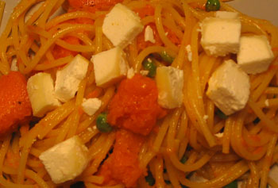

Spaghetti with butternut squash and goat cheese
Through sheer luck a few days ago, I obtained a perfect little nugget of Crottin de Chavignol, freshly smuggled into the United States from France. Crottin de Chavignol means “little turd from Chavignol,” but it’s up there with Sainte-Maure de Touraine as one of the best goat cheeses in France. My mother, who refused to enter my Tours apartment before I discarded my moldy log of Sainte-Maure, might disagree. There’s no cheese I love more than a chalky, musty, intense and bone dry goat.
Not up for going to Whole Foods tonight, I used what was around and made linguine with butternut squash, garlic, thyme, honey, and goat cheese:

That picture is zoomed in because I got the plate a bit oily, but now you can see the texture of the fantastic chèvre. I would make this dish differently if I did it again, which is unlikely because I can’t get this cheese here as far as I know. I would use penne instead of spaghetti, but I don’t have any in the house right now. I would also roast the squash and garlic for 20 minutes or so, which I think would prevent the squash from getting so mushy. The honey was a dope addition though. I added it because everything was tasting too salty, and it came out very well, especially with fresh thyme.
Comments
I fully support the smuggling trade when it comes to fresh cheeses. Especially if said cheese is from France or Italy.
Go smugglers!
Add a comment